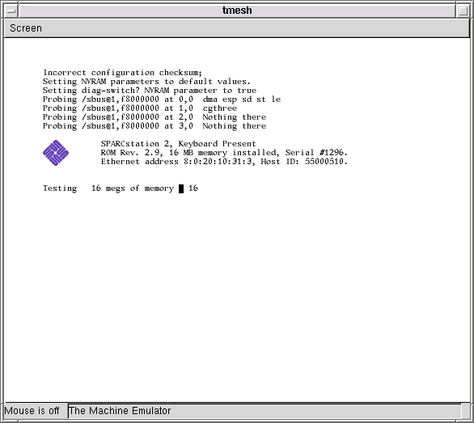
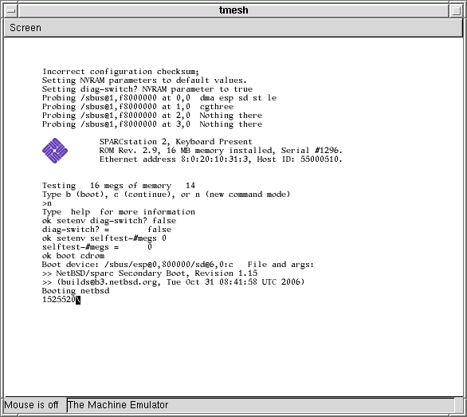
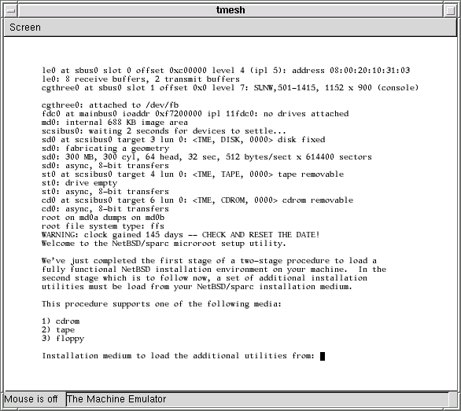

Warning: This is alpha-quality software. Don't count on it for anything. Use it at your own risk.
http://csail.mit.edu/~fredette/tme/sun4-75-rev-2.9.bin
http://csail.mit.edu/~fredette/tme/SUNW,501-1415.bin
http://csail.mit.edu/~fredette/tme/SUNW,501-1561.bin
If Sun asks me to stop distributing these ROMs, I will.
In general, any working directory filename that begins with my- or MY- is a file that is specific to your individual emulated machine. With the exception of the disk image, these are mostly text files, and you are encouraged to edit many of them to suit yourself.
% mkdir /some/where/my-sun4c % cd /some/where/my-sun4c
Now populate this directory:
% cp /usr/pkg/share/examples/tme/SUN4-75 ./MY-SUN4CThis file contains tmesh commands that create a SPARCstation 2. If you don't change this file, it creates a SPARCstation 2 with a cgthree framebuffer, type-4 keyboard and mouse, one disk drive, one tape drive, and an unconnected network interface.
If you can't use the emulated framebuffer (because, for example, you aren't running X or didn't build tme with GTK), you must edit this file to disable the GTK-based display and enable the serial console instead. Comments in the MY-SUN4C file should explain how to do this.
% cp /some/where/sun4-75-rev-2.9.bin .
The Sun 4c NVRAM contents are kept in a file, with the Sun IDPROM information at the end. Creating an initial NVRAM file involves writing a file with a specific number of zeroes, followed by the IDPROM information.
The tme-sun-idprom Perl script makes the IDPROM information. Before you can run it, you must choose an Ethernet address for your emulator - even if tme won't have access to the network. Ethernet addresses for Sun workstations always begin with 8:0:20, so pick three hexadecimal bytes XX:YY:ZZ such that 8:0:20:XX:YY:ZZ is not taken by any other machine on your LAN.
% dd if=/dev/zero bs=1 count=2008 of=my-sun4c-nvram.bin % tme-sun-idprom SS2 8:0:20:XX:YY:ZZ >> my-sun4c-nvram.bin
% cp /usr/pkg/share/examples/tme/sun-keyboards.txt . % cp /usr/pkg/share/examples/tme/my-sun-macros.txt ./my-sun-macros.txtYou should not edit the sun-keyboards.txt file, however you may want to edit the my-sun-macros.txt file. The two files work together to transform key events on your keyboard into Sun type-4 scan codes.
The sun-keyboards.txt file lists all of the symbols (in X terminology, all of the "keysyms") on a Sun type-4 keyboard, and gives for each keysym a Sun type-4 scan code and some modifier information. Because Sun type-4 keyboards are never going to change, you shouldn't change this file, even if you think it lists keysyms that your keyboard doesn't have, like L1, R11, etc.
The my-sun-macros.txt file is meant to adapt your keyboard to the Sun type-4 keyboard. Any keysyms that the Sun type-4 keyboard has, that your keyboard doesn't have, can be generated by macros added to this file. For example, tmesh may complain that:
[/display0.0]: cannot generate keysym 'R9' directly, or through a macro: No such file or directoryThe odds are good that you don't care about generating the R9 key - it's one of the keysyms on the strange, original Sun numeric keypad. But if you absolutely must be able to generate the R9 key, you could add a line similar to the following to your my-sun-macros.txt file:
Alt_R F9 = R9Then, you could simulate pressing R9 by pressing the right Alt key and then the F9 key.
The my-sun-macros.txt that you copied from sun-macros.txt contains a small number of macros for generating the L1, L2, etc., keys. These macros should be sufficient for general use - simply ignore the tmesh warnings about other, obscure keysyms.
Under X, to learn about the keysyms present on your keyboard, the xmodmap -pk command will print out your current keyboard map. Alternately, the xev command may be a more convenient way to see what key combinations on your keyboard generate which keysyms.
% dd if=/dev/zero of=my-sun4c-disk.img bs=1 count=1 seek=NNNNNNNNIt's not immediately wasteful to choose a very large disk size - this dd command will create a disk image that initially takes up almost zero real space on your host's disk. Only as the disk is populated will your host's operating system allocate more real space to the image.
Getting the NetBSD install CD-ROM image
NetBSD installation on tme uses a CD-ROM image. While an
image of any vendor's NetBSD/sparc CD-ROM should work, only the
NetBSD 3.1
official sparc CD-ROM image was tested.
The CD-ROM image must be downloaded and stored on your host machine, in your /some/where/my-sun4c/ directory.
Download the official NetBSD/sparc CD-ROM image from a mirror close to you. The pathname to the image is /pub/NetBSD/iso/3.1/sparccd-3.1.iso or something similar. You may also be able to download this image as a BitTorrent.
% cd /some/where/my-sun4c
The emulator itself is called tmesh. tmesh is a
shell for running commands that create and control emulated machines.
One day, you will be able to create and manage a whole set
of emulated machines running inside the same tmesh process,
but for now it's only been tested to handle one machine.
tmesh takes one argument on its command line: the name of a
text file containing initial commands for it to execute. In this
case, MY-SUN4C contains commands to assemble a SPARCstation 2.
A new blank GTK window should appear on your screen. If you
see any error messages, hopefully they're descriptive enough to help
you figure out what went wrong. Usually, the first error listed is
the real problem; when a central element of the emulated SPARCstation 2
can't be created, many subsequent errors will be generated because all
of the attachments to that central element also fail.
If you don't see any error messages, at this tmesh>
prompt, give the ls command. This should give the following
output:
If the output contains all of these entries, your emulated SPARCstation 2
is ready to run.
What this means is that the CD-ROM emulation isn't very useful except
for installation. For this reason, the CD-ROM emulation isn't enabled
by default in the configuration file, and you have to give these long
commands here to enable it:

Because you started out with an NVRAM full of zeroes, the PROM has set
the diag-switch? parameter to true and assumes that
it should test all of its memory.
Having the PROM test your host machine's memory is slow and not really
useful, so it's best to disable the memory test in the NVRAM.
First, break into the PROM monitor prompt by moving your mouse into
the tmesh window and pressing RightControl-F1-A, using the
right Control key (assuming you're using the standard tme Sun
keyboard macros). This will emulate pressing L1-A, which will break
into the PROM's "old command mode":

Once the INSTALL kernel has been booted, the installation
microroot will display the first installation prompt:

You want to enter 1 to load the installation utilities from
CD-ROM. Hit Enter twice to use the default /dev/cd0a
device and /cdrom/sparc/installation/bootfs/instfs.tgz.
After a while (it takes some time to decompress instfs.tgz),
you will be prompted for a terminal type (hit Enter), and
finally select I to start sysinst.
Booting and using the NetBSD install CD-ROM
Once you have an installation CD-ROM image, you must boot it.
% tmesh ./MY-SUN4C
ignore any cannot generate keysym warnings
tmesh>
tmesh> ls
board0: tme/machine/sun4 name Calvin
cpu0 at board0: tme/ic/cy7c601 fpu-type tms390-c602A fpu-compliance partial fpu-incomplete trap
sbus0 controller at board0 sbus: tme/generic/bus size 4GB slot-addr 0xf8000000 slot-size 32MB slot 0 slot 1 slot 2 slot 3
sbus0 controller at board0 sbus: tme/generic/bus size 4GB slot-addr 0xf8000000 slot-size 32MB slot 0 slot 1 slot 2 slot 3
ram0 at sbus0 addr 0x0: tme/host/posix/memory ram 16MB
rom0 at sbus0 addr 0xf6000000: tme/host/posix/memory rom sun4-75-rev-2.9.bin
zs0 at sbus0 addr 0xf1000000 ipl 12: tme/machine/sun4/zs
zs1 at sbus0 addr 0xf0000000 ipl 12: tme/machine/sun4/zs
nvram0 at sbus0 addr 0xf2000000: tme/host/posix/memory persistent my-sun4c-nvram.bin
clock0 at sbus0 addr 0xf20007f8: tme/machine/sun4/clock type tme/ic/mk48t02
fdc0 at sbus0 addr 0xf7200000 ipl 11: tme/machine/sun4/fdc type tme/ic/i82072
audioamd0 at sbus0 addr 0xf7201000 ipl 13: tme/ic/am7930
kbd0 at zs1 channel A: tme/serial/keyboard type sun-type-4-us macros my-sun-macros.txt map sun-keyboards.txt rate 20
ms0 at zs1 channel B: tme/serial/mouse type mousesystems-5
sink1 at zs0 channel A: tme/serial/sink
esp0 at sbus0 slot 0 offset 0x800000 ipl 3: tme/ic/lsi64854 revision 1+ channel scsi
esp0 dma at sbus0 slot 0 offset 0x400000
ncr0 at esp0 master: tme/ic/ncr53c9x variant esp100
scsibus0 at ncr0: tme/scsi/bus
le0 at sbus0 slot 0 offset 0xc00000 ipl 5 dma-offset 0xff000000: tme/ic/am7990
cgthree0 at sbus0 slot 1 offset 0x0 ipl 7: tme/bus/sbus/cgthree
cgthreerom0 at sbus0 slot 1 offset 0x0: tme/host/posix/memory rom SUNW,501-1415.bin
display0 at cgthree0: tme/host/gtk/display
display0 at kbd0
display0 at ms0
sd0 at scsibus0: tme/scsi/disk id 3 type tme-scsi-1
disk0 at sd0: tme/host/posix/disk file my-sun4c-disk.img
st0 at scsibus0: tme/scsi/tape id 4 type tme-scsi-1
tape0 at st0: tme/host/posix/tape
WARNING: Unfortunately, the current release of tme
doesn't have true CD-ROM emulation. Temporarily, the modules that
emulate regular disks are being reused to create a minimal CD-ROM
emulation.
tmesh> cd0 at scsibus0: tme/scsi/cdrom id 6 type tme-scsi-1
tmesh> cdrom0 at cd0: tme/host/posix/disk file sparccd-3.1.iso read-only
tmesh> command board0 power up
After a while (the SPARCstation 2 PROM does a good power-on self-test), you should see
something like this:
Type b (boot), c (continue), or n (new command mode)
>
You want "new command mode", which is the real OpenBoot PROM:
> n
Type help for more information
ok
Now you can turn the diagnostics switch and the memory test off:
ok setenv diag-switch? false
diag-switch? = false
ok setenv selftest-#megs 0
selftest-#megs = 0
ok
Now, tell the PROM to boot the install CD-ROM:
ok boot cdrom
After a short delay, the PROM should begin booting the install CD-ROM image:
Running sysinst
Now you should follow the traditional
NetBSD/sparc installation procedure.
Some notes and hints:
% echo 'command board0 power up' >> MY-SUN4C